Galería de imágenes
Cada imagen generada, la sección de la página donde se muestra, su archivo en español y en inglés, y lo que explica al usuario.
Plataforma (inicio)index.html
Hero (fondo) · Gestiona tus órdenes de producción de principio a fin.
POMGT: orden de producción con avance, pedido del cliente, máquina produciendo, display de operador en tablet y gráficas de producción
es/pomgt-hero-gestion-ordenes-produccion.svgen/pomgt-hero-production-order-management.svg
Un solo flujo, del pedido al producto terminado.
Flujo de POMGT: cliente, pedido, orden de producción, ruta y máquinas, producto terminado
es/pomgt-flujo-cliente-pedido-orden-producto.svgen/pomgt-flow-customer-order-production-finished-goods.svg
El centro de control de tu manufactura.
Dashboard de producción de POMGT con KPIs, producción semanal, estado de órdenes y actividad reciente
es/pomgt-tablero-control-produccion.svgen/pomgt-production-control-dashboard.svg
Monitorea toda tu área de producción en un mapa 2D.
Mapa de planta 2D con estados de máquinas y flujo de producción
es/pomgt-mapa-planta-2d-maquinas.svgen/pomgt-plant-floor-2d-map-machines.svg
Planifica, ejecuta y cierra cada orden.
Módulo de órdenes de producción con lista, avance y operaciones
es/pomgt-gestion-ordenes-produccion.svgen/pomgt-production-order-management.svg
Displays de producción para tus operadores.
Display de operador en tablet con paso, materiales y firma
es/pomgt-display-operador-tablet.svgen/pomgt-operator-display-tablet.svg
Cada orden, documentada y firmada.
Orden de producción en PDF con secuencia de fabricación y firmas
es/pomgt-orden-produccion-pdf-firmas.svgen/pomgt-production-order-pdf-signatures.svg
Qué materiales lleva cada producto.
Estructura de fabricación con materiales, cantidades y merma
es/pomgt-estructura-fabricacion-arbol-materiales.svgen/pomgt-bill-of-materials-tree.svg
Qué pasos y máquinas sigue cada producto.
Ruta de fabricación con secuencia de pasos y detalle del paso
es/pomgt-rutas-fabricacion-secuencia.svgen/pomgt-manufacturing-routing-sequence.svg
No importa lo que fabriques, el sistema se moldea a TU producción.
Rutas de fabricación para autopartes, muebles, piezas metálicas y alimentos
es/pomgt-se-adapta-a-tu-produccion.svgen/pomgt-adapts-to-your-production.svg
Display de operador
Documentos y órdenes PDF
es/pomgt-orden-produccion-pdf-trazabilidad.svgen/pomgt-production-order-pdf-traceability.svg
Rutas de fabricación
Estructuras de fabricación
es/pomgt-estructura-fabricacion-materiales.svgen/pomgt-bill-of-materials-structure.svg
Estructuras de fabricación
Productos y materiales
es/pomgt-catalogo-materiales-inventario.svgen/pomgt-materials-inventory-catalog.svg
Productos y materiales
Clientes y pedidos
es/pomgt-pedidos-ordenes-produccion.svgen/pomgt-sales-orders-production-orders.svg
Monitor en planta, tablet para operadores, celular para ti.
POMGT en monitor, tablet y celular
es/pomgt-monitoreo-multi-dispositivo.svgen/pomgt-multi-device-monitoring.svgMódulosmodulos.html
Hero (fondo) · Nueve módulos, un solo sistema.
Órdenes de producción de POMGT con avance, operaciones y materiales
es/pomgt-gestion-ordenes-produccion.svgen/pomgt-production-order-management.svgOperación y monitoreo
Dashboard de producción
es/pomgt-tablero-control-produccion.svgen/pomgt-production-control-dashboard.svgÓrdenes de producción
Mapa de planta
es/pomgt-mapa-planta-2d-maquinas.svgen/pomgt-plant-floor-2d-map-machines.svgMapa de planta
Display de operador
es/pomgt-display-operador-tablet.svgen/pomgt-operator-display-tablet.svgDisplay de operador
Documentos y órdenes PDF
es/pomgt-orden-produccion-pdf-trazabilidad.svgen/pomgt-production-order-pdf-traceability.svgIngeniería y catálogo
Rutas de fabricación
es/pomgt-rutas-fabricacion-secuencia.svgen/pomgt-manufacturing-routing-sequence.svgRutas de fabricación
Estructuras de fabricación
es/pomgt-estructura-fabricacion-materiales.svgen/pomgt-bill-of-materials-structure.svgEstructuras de fabricación
Productos y materiales
es/pomgt-catalogo-materiales-inventario.svgen/pomgt-materials-inventory-catalog.svgVentas
Clientes y pedidos
es/pomgt-pedidos-ordenes-produccion.svgen/pomgt-sales-orders-production-orders.svgTu planta en una sola pantalla, en tiempo real.modulos/dashboard-de-produccion.html

Hero (fondo) · Tu planta en una sola pantalla, en tiempo real.
Indicadores del dashboard de producción de POMGT: producción activa, OPs programadas, atrasadas, bloqueadas, producción completada y capacidad utilizada
es/pomgt-dashboard-indicadores-produccion.svgen/pomgt-dashboard-production-kpis.svg
Producido contra planeado, día por día.
Gráfica de producción semanal producidas contra planeadas
es/pomgt-dashboard-produccion-semanal.svgen/pomgt-dashboard-weekly-production.svg
Sabe qué máquinas están al límite.
Utilización de capacidad y capacidad por máquina
es/pomgt-dashboard-capacidad-maquinas.svgen/pomgt-dashboard-machine-capacity.svg
Lo urgente aparece antes de que sea tarde.
Próximos vencimientos y alertas de producción
es/pomgt-dashboard-vencimientos-alertas.svgen/pomgt-dashboard-due-dates-alerts.svgFunciona mejor conectado.
Órdenes de producción
es/pomgt-gestion-ordenes-produccion.svgen/pomgt-production-order-management.svgÓrdenes de producción
Mapa de planta
es/pomgt-mapa-planta-2d-maquinas.svgen/pomgt-plant-floor-2d-map-machines.svgMapa de planta
Display de operador
es/pomgt-display-operador-tablet.svgen/pomgt-operator-display-tablet.svgCada orden, cada paso, bajo control.modulos/ordenes-de-produccion.html
Hero (fondo) · Cada orden, cada paso, bajo control.
Módulo de producción de POMGT con lista de órdenes, avance, operaciones y KPIs de la orden
es/pomgt-gestion-ordenes-produccion.svgen/pomgt-production-order-management.svg
Mira el flujo de órdenes como prefieras.
Tablero Kanban de órdenes de producción por estado
es/pomgt-produccion-kanban-ordenes.svgen/pomgt-production-orders-kanban.svg
Todo lo de la orden en un vistazo.
Indicadores de la orden de producción: avance, cantidad, operaciones, materiales y costo real
es/pomgt-orden-produccion-indicadores.svgen/pomgt-production-order-kpis.svg
Avance real por operación y por máquina.
Avance por operación de una orden de producción
es/pomgt-orden-produccion-operaciones.svgen/pomgt-production-order-operations.svgFunciona mejor conectado.
Display de operador
es/pomgt-display-operador-tablet.svgen/pomgt-operator-display-tablet.svgDisplay de operador
Rutas de fabricación
es/pomgt-rutas-fabricacion-secuencia.svgen/pomgt-manufacturing-routing-sequence.svgRutas de fabricación
Documentos y órdenes PDF
es/pomgt-orden-produccion-pdf-trazabilidad.svgen/pomgt-production-order-pdf-traceability.svgToda tu planta, en vivo desde un monitor.modulos/mapa-de-planta.html
Hero (fondo) · Toda tu planta, en vivo desde un monitor.
Mapa de planta 2D de POMGT con máquinas produciendo, en cola, en preparación, mantenimiento y flujo de producción
es/pomgt-mapa-planta-2d-maquinas.svgen/pomgt-plant-floor-2d-map-machines.svg
Siete estados, un color para cada uno.
Estados de las máquinas en el mapa de planta
es/pomgt-mapa-planta-estados-maquinas.svgen/pomgt-plant-map-machine-status.svg
Sigue cada orden a través de sus máquinas.
Vista de filas por orden con los pasos de cada orden por máquina
es/pomgt-mapa-planta-ordenes-por-fila.svgen/pomgt-plant-map-orders-by-row.svg
Lo que pasa en cada máquina, al momento.
Detalle en vivo de una máquina con cantidad producida y órdenes asignadas
es/pomgt-mapa-planta-maquina-en-vivo.svgen/pomgt-plant-map-live-machine.svgFunciona mejor conectado.
Dashboard de producción
es/pomgt-tablero-control-produccion.svgen/pomgt-production-control-dashboard.svgDashboard de producción
Display de operador
es/pomgt-display-operador-tablet.svgen/pomgt-operator-display-tablet.svgDisplay de operador
Rutas de fabricación
es/pomgt-rutas-fabricacion-secuencia.svgen/pomgt-manufacturing-routing-sequence.svgTus operadores producen desde una tablet.modulos/display-de-operador.html
Hero (fondo) · Tus operadores producen desde una tablet.
Display de operador de POMGT en tablet con paso actual, cantidad producida y materiales listos
es/pomgt-display-operador-tablet.svgen/pomgt-operator-display-tablet.svg
Antes de producir, se verifica el material.
Verificación de materiales del paso en el display de operador
es/pomgt-display-operador-materiales-verificados.svgen/pomgt-operator-display-materials-verified.svg
Firmar y continuar. Así de simple.
Registros del paso y firma del operador para continuar
es/pomgt-display-operador-firma-registros.svgen/pomgt-operator-display-signature-log.svgFunciona mejor conectado.
Órdenes de producción
es/pomgt-gestion-ordenes-produccion.svgen/pomgt-production-order-management.svgÓrdenes de producción
Mapa de planta
es/pomgt-mapa-planta-2d-maquinas.svgen/pomgt-plant-floor-2d-map-machines.svgMapa de planta
Documentos y órdenes PDF
es/pomgt-orden-produccion-pdf-trazabilidad.svgen/pomgt-production-order-pdf-traceability.svgLa orden completa, en un PDF listo para firmar.modulos/documentos-y-ordenes-pdf.html
Hero (fondo) · La orden completa, en un PDF listo para firmar.
Orden de producción en PDF generada por POMGT con trazabilidad y firma del operador
es/pomgt-orden-produccion-pdf-trazabilidad.svgen/pomgt-production-order-pdf-traceability.svgCada paso con su hora y su firma.
Secuencia de fabricación en el PDF con inicio, fin y firma por paso
es/pomgt-orden-produccion-pdf-firmas.svgen/pomgt-production-order-pdf-signatures.svg
Cada archivo, ligado a lo que corresponde.
Documentos organizados por orden de producción, pedido y cliente
es/pomgt-documentos-organizados-por-orden.svgen/pomgt-documents-organized-by-order.svg
La historia completa de cada orden.
Historial de actividad de una orden de producción
es/pomgt-trazabilidad-actividad-orden.svgen/pomgt-order-activity-traceability.svgFunciona mejor conectado.
Órdenes de producción
es/pomgt-gestion-ordenes-produccion.svgen/pomgt-production-order-management.svgÓrdenes de producción
Display de operador
es/pomgt-display-operador-tablet.svgen/pomgt-operator-display-tablet.svgDisplay de operador
Clientes y pedidos
es/pomgt-pedidos-ordenes-produccion.svgen/pomgt-sales-orders-production-orders.svgDefine cómo se fabrica cada producto.modulos/rutas-de-fabricacion.html

Hero (fondo) · Define cómo se fabrica cada producto.
Ruta de fabricación con seis pasos, máquinas, tiempos de setup y tiempo de ciclo estimado
es/pomgt-ruta-fabricacion-pasos-maquinas.svgen/pomgt-routing-steps-machines.svgPasos numerados, versión activa.
Secuencia de fabricación con pasos, versión y detalle del paso
es/pomgt-rutas-fabricacion-secuencia.svgen/pomgt-manufacturing-routing-sequence.svg
Cada paso sabe qué tipo de material usa.
Detalle del paso con tipos de materiales usados
es/pomgt-ruta-fabricacion-tipos-materiales.svgen/pomgt-routing-step-material-types.svgFunciona mejor conectado.
Estructuras de fabricación
es/pomgt-estructura-fabricacion-materiales.svgen/pomgt-bill-of-materials-structure.svgEstructuras de fabricación
Órdenes de producción
es/pomgt-gestion-ordenes-produccion.svgen/pomgt-production-order-management.svgÓrdenes de producción
Mapa de planta
es/pomgt-mapa-planta-2d-maquinas.svgen/pomgt-plant-floor-2d-map-machines.svgLo que lleva cada producto, definido una sola vez.modulos/estructuras-de-fabricacion.html
Hero (fondo) · Lo que lleva cada producto, definido una sola vez.
Estructura de fabricación de un soporte de motor con siete materiales, tipo, cantidad y merma
es/pomgt-estructura-fabricacion-arbol-materiales.svgen/pomgt-bill-of-materials-tree.svgMateriales, subensambles, consumibles y empaques.
Estructura de fabricación con materiales, versión activa y costo estimado
es/pomgt-estructura-fabricacion-materiales.svgen/pomgt-bill-of-materials-structure.svg
Costo estimado y control de cambios.
Costo por tipo de material y versiones de la estructura
es/pomgt-estructura-fabricacion-costos-versiones.svgen/pomgt-bill-of-materials-cost-versions.svgFunciona mejor conectado.
Rutas de fabricación
es/pomgt-rutas-fabricacion-secuencia.svgen/pomgt-manufacturing-routing-sequence.svgRutas de fabricación
Productos y materiales
es/pomgt-catalogo-materiales-inventario.svgen/pomgt-materials-inventory-catalog.svgProductos y materiales
Órdenes de producción
es/pomgt-gestion-ordenes-produccion.svgen/pomgt-production-order-management.svgTu catálogo y tu inventario, conectados a producción.modulos/productos-y-materiales.html
Hero (fondo) · Tu catálogo y tu inventario, conectados a producción.
Catálogo de materiales de POMGT con especificaciones, estructuras donde se usa y existencia
es/pomgt-catalogo-materiales-inventario.svgen/pomgt-materials-inventory-catalog.svg
Existencias a la vista, faltantes antes de que paren la planta.
Inventario de materiales con existencia y nivel contra mínimo
es/pomgt-materiales-existencias-inventario.svgen/pomgt-materials-stock-inventory.svg
La ficha maestra de cada producto.
Ficha de producto con especificaciones técnicas y contadores
es/pomgt-producto-especificaciones-tecnicas.svgen/pomgt-product-technical-specifications.svg
Un solo catálogo para ventas e ingeniería.
Catálogo de productos con contadores y especificaciones
es/pomgt-catalogo-productos.svgen/pomgt-product-catalog.svgFunciona mejor conectado.
Estructuras de fabricación
es/pomgt-estructura-fabricacion-materiales.svgen/pomgt-bill-of-materials-structure.svgEstructuras de fabricación
Clientes y pedidos
es/pomgt-pedidos-ordenes-produccion.svgen/pomgt-sales-orders-production-orders.svgClientes y pedidos
Rutas de fabricación
es/pomgt-rutas-fabricacion-secuencia.svgen/pomgt-manufacturing-routing-sequence.svgDel pedido del cliente a la orden de producción.modulos/clientes-y-pedidos.html
Hero (fondo) · Del pedido del cliente a la orden de producción.
Pedido de cliente con sus líneas ligadas a órdenes de producción y su avance
es/pomgt-pedido-lineas-ordenes-produccion.svgen/pomgt-sales-order-lines-production-orders.svg
Todo lo de cada cliente en su ficha.
Ficha de cliente con indicadores, información general, contactos y direcciones
es/pomgt-cliente-indicadores-contactos.svgen/pomgt-customer-kpis-contacts.svgCada pedido sabe cuánto lleva.
Pedido conectado a sus órdenes de producción con avance
es/pomgt-pedidos-ordenes-produccion.svgen/pomgt-sales-orders-production-orders.svg
Tu cartera completa, ordenada.
Registro de clientes con lista, contadores y contactos
es/pomgt-registro-clientes.svgen/pomgt-customer-records.svgFunciona mejor conectado.
Órdenes de producción
es/pomgt-gestion-ordenes-produccion.svgen/pomgt-production-order-management.svgÓrdenes de producción
Productos y materiales
es/pomgt-catalogo-materiales-inventario.svgen/pomgt-materials-inventory-catalog.svgProductos y materiales
Documentos y órdenes PDF
es/pomgt-orden-produccion-pdf-trazabilidad.svgen/pomgt-production-order-pdf-traceability.svgBeneficiosbeneficios.html
Hero (fondo) · Menos llamadas a planta. Más producción entregada a tiempo.
POMGT en monitor de planta, tablet de operador y celular
es/pomgt-monitoreo-multi-dispositivo.svgen/pomgt-multi-device-monitoring.svg
Menos llamadas a planta. Más producción entregada a tiempo.
Indicadores de ejemplo: entregas a tiempo, trazabilidad, tiempo de planeación y capacidad utilizada
es/pomgt-resultados-indicadores.svgen/pomgt-results-kpis.svgDecide con números, no con suposiciones.
Indicadores del dashboard para dirección
es/pomgt-dashboard-indicadores-produccion.svgen/pomgt-dashboard-production-kpis.svgPrioriza y programa sin hojas de cálculo.
Kanban de órdenes para planeación
es/pomgt-produccion-kanban-ordenes.svgen/pomgt-production-orders-kanban.svgInstrucciones claras en su tablet.
Display de operador con registros y firma
es/pomgt-display-operador-firma-registros.svgen/pomgt-operator-display-signature-log.svgRespuestas al cliente en segundos.
Pedido ligado a órdenes de producción para ventas
es/pomgt-pedido-lineas-ordenes-produccion.svgen/pomgt-sales-order-lines-production-orders.svgLa historia de cada orden, con evidencia.
Historial de actividad de una orden de producción
es/pomgt-trazabilidad-actividad-orden.svgen/pomgt-order-activity-traceability.svgTu proceso, no el nuestro.
Rutas para distintos tipos de manufactura
es/pomgt-se-adapta-a-tu-produccion.svgen/pomgt-adapts-to-your-production.svgIndustriasindustrias.html
Hero (fondo) · No importa lo que fabriques, POMGT se moldea a TU producción.
Rutas de fabricación de POMGT para automotriz, muebles, piezas metálicas y alimentos
es/pomgt-se-adapta-a-tu-produccion.svgen/pomgt-adapts-to-your-production.svgTus pasos, tus máquinas, tu orden.
Ruta de fabricación con pasos y máquinas de un soporte de motor
es/pomgt-ruta-fabricacion-pasos-maquinas.svgen/pomgt-routing-steps-machines.svgLo que lleva cada producto, sin adivinar.
Estructura de fabricación con materiales, cantidades y merma
es/pomgt-estructura-fabricacion-arbol-materiales.svgen/pomgt-bill-of-materials-tree.svgTu piso de producción, tal como es.
Estados de máquinas en el mapa de planta
es/pomgt-mapa-planta-estados-maquinas.svgen/pomgt-plant-map-machine-status.svgPreciosprecios.html
Hero (fondo) · Un plan para cada tamaño de planta.
Indicadores de producción de POMGT: producción activa, OPs programadas, capacidad y alertas
es/pomgt-dashboard-indicadores-produccion.svgen/pomgt-dashboard-production-kpis.svgContactocontacto.html
Hero (fondo) · Hablemos de tu producción.
Display de operador de POMGT en tablet con paso, materiales y firma
es/pomgt-display-operador-tablet.svgen/pomgt-operator-display-tablet.svg